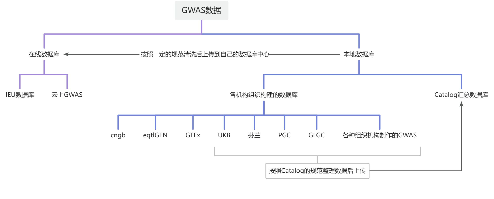

前言：
许多同学在入门孟德尔随机化，学习了很多常见数据库之后，还是无法理清各种数据的真实来源。
1.无法找到数据的详情信息，数据的队列信息到底哪里可以找得到
2.两个数据测序人群是否属于同个队列，是否存在样本重叠
在本文中，将给大家彻底理清各种数据库之间的差异以及关联。让大家在做MR分析时，能够对数据库有更加清晰的了解。
关键词：数据库、Catalog、IEU、云上GWAS、样本重叠、两样本、人群队列
数据分类思维导图：
常用数据库的网址，基本上都可以从这个网址上找到。0. 必看！常见GWAS数据来源汇总目录站内引用1.GWAS Catlog2.UKB 2018Round2英国生物银行的汇总数据集3.ieu--opengwas--mrbase收录的在线数据4.芬兰数据库以及重叠率计算云上GWAS数据库-汇总了非常多的数据00.云上GWAS的介绍其他专用数据库：EGG：早期生长联盟数据，包含出生体重，出生头...
大家有各种各样的数据来源，也可以在这个文档内评论留言，如果觉得还不错，还可以点个赞。
在线和本地的定义，是指做MR的时候，是否需要下载到本地才能分析。
注意：本地数据库里的数据，如果在在线数据库无法找到具体的id。则需要通过数据提供的官网，汇总下载文档，文章数据来源等地方，找到下载链接，进行下载，本地清洗后，才可以进行MR分析。


在线数据库的特性
各种来源的本地数据
根据一定的规范进行数据清洗
提供大容量存储空间，存储到服务器数据库中
提供数据提取接口，满足MR以及各种分析业务逻辑的需求。
这种数据库的构建，都是需要大量的人力及服务器成本才可以实现。
汇总数据库横向比较：
汇总数据库指：汇总了很多不同来源的数据（catalog、ukb、芬兰等），自己不创造数据的数据库。
Catalog | 云上GWAS | IEU | |
可在线提取 | × | √ | √ |
数据更新频率 | 最高 | 较高 | 慢 |
数据新旧程度 | 很新 | 较新 | 陈旧 |
数据量 | 巨大 | 多 | 少量 |
提取或者下载速度 | ftp下载慢，处理费时间 | 巨快，直接秒级提取 | 一般，各种502错误，需要配置token（token有bug，提取数据可能会丢失） |
怎么选择数据：
如果一个表型的数据，有多个数据来源，那应该如何选择？
医工科研团队总结了选择数据的优先级，大家可以参考，也可以注入自己的理解。
文章的期刊影响因子>数据发表的年限>数据samplesize样本量==数据case病例组数量
最终要回归到做出来的MR结果，毕竟结果不好都是空话。
确认详情信息：
1.各机构自己构建的数据库：
如果是各机构组织自己构建的数据库，一般都会有官网。
比如UKB数据库，芬兰数据库等，都会有提供相应的官网。
医工科研团队特别提供了常见数据库的使用教程，如果需要的，可以从孟德尔修炼手册-数据准备与处理-常见GWAS数据目录中找到。
我们会详细介绍常见的数据库是怎么下载数据的，以及怎么查看对应的表型信息。0. 必看！常见GWAS数据来源汇总目录站内引用1.GWAS Catlog2.UKB 2018Round2英国生物银行的汇总数据集3.ieu--opengwas--mrbase收录的在线数据4.芬兰数据库以及重叠率计算云上GWAS数据库-汇总了非常多的数据00.云上GWAS的介绍其他专用数据库：EGG：早期生长联盟数据，包含出生体重，出生头...
2.各种文章的提供的数据
这种数据，可以直接从原文的队列介绍中，找到人群队列信息。
更多的测序信息，调整的协变量等信息，则需要进一步查看原文获得。
也可以看相关的引用文章，参考和模仿别人是怎么写的。
3.在线数据库IEU
当前的IEU在线数据库，是入门MR的首选在线数据库。它的优点就是在很早之前就提供了相应的接口包，可以快速的完成MR分析。缺点就是数据比较旧了，具体的介绍可以看这个文档3.ieu--opengwas--mrbase收录的在线数据站内引用写在前面：目前IEU数据库，提供了ieugwasr包（TwoSampleMR包底层数据获取接口）的提取数据接口，所以成为了众多孟德尔随机化分析初学者的首选数据库优点：1.汇总了常用的ukb，finn芬兰，met代谢组，eqtlGen，catalog部分数据，这些数据提取起来比较方便2.提供的简...
重点解释一下这个数据库的成分，可以通过数据id的前缀直接判断数据来源。
具体的描述

bbj 日本生物银行东亚的数据。
ebi-a前缀的数据，统一来源是Catalog。
eqtl-a 来源eqtlGEN的全血数据。
finn-b 是芬兰R5的数据，目前芬兰数据已经是R11了。
ieu-a ieu-b 是IEU组织早期收集的数据，可以点进去找到PMID查看数据信息。
met- 是代谢组的信息。
prot- 是蛋白组的信息。
其他编号开头的，如果是ukb、ubm开头的，则是ukb队列（固定的那50W人群）。
特别注意：
如果需要确认ebi-a的人群队列信息，是需要去看原文的。
比如这个id的例子，点进去详情后，可以看到PMID，也可以看到GCST的id号，是可以利用去Catalog找到原始的数据文章，然后从文章中找到具体的队列信息。
如果在线分析受阻，下载本地数据的话，可以直接找到对应gcst号，去catalog上直接下载，自己清洗后进行本地分析。具体的教程，也可以看这个文档1.GWAS Catalog站内引用零、网站基本使用操作以下教程，如果网页无法正常打开、显示，需要先搭梯子翻墙。https://www.ebi.ac.uk/gwas/home点击Summary statictics进入后，可以查看catalog上包含的数据详情https://www.ebi.ac.uk/gwas/download...

有些数据没有提供pmid的，需要下载的话，只能下载vcf文件，然后进行转换。
除了常用的代码转换，医工科研团队特别研发了一个零代码基本零内存的转化软件。
4.云上GWAS
云上GWAS和IEU类似，是一个中国团队制作的在线数据库。它的优点就是数据特别新，囊括近年来新发表的数据。

其数据详情确认，可以从pmid，或者ID编号与数据来源中可以找到。

特别注意：云上GWAS不提供原始数据的下载，所有的服务，仅限于提供接口提取用于MR分析的数据。如果需要完整的本地数据，自行找到分页中源数据链接，找到原始数据的下载链接下载。
更多详细的数据信息可以点开链接查看：
公众号推文：云上GWAS数据数据详情及使用说明！引用链接云上GWAS数据数据详情及使用说明！
5.IEU和云上的接口横向对比
exposure_data = TwoSampleMR::extract_instruments("ieu-a-2", p1=5e-8, r2=0.001, kb=10000)
outcome_data = TwoSampleMR::extract_outcome_data(exposure_data$SNP, "ieu-b-2")exposure_data = FastGWASR::extract_tophist_iv("ukb-saige-994", pval=5e-8, r2=0.001, kb=10000)
outcome_data = FastGWASR::extract_outcome_data("finngen_R11_AB1_ACTINOMYCOSIS", exposure_data$SNP)云上支持多个id传入，批量提取，具体可以看这个接口文档：02.FastGWASR的使用引用链接FastGWASR接口使用说明 一、如何获取自己的积分 除了可以直接在网站上查自己的积分（网站会有点延迟）外，可以直接使用代码包进行获取 library(FastAuthR) library(FastGWASR) get_score() #获取自己的积分 二、FastGWASR的使用 注意：使用对
MendelR内嵌云上的功能，直接填id即可直接提取。03.云上GWAS通用实操方法站内引用切换到模式三后，MendelR可以通过云上GWAS的具体id进行数据提取并分析使用前，请先激活云上GWAS的功能：01.如何激活云上GWAS云上GWAS数据网页端：https://gwas.medicineitlab.com/视频：https://player.bilibili.com/pla...
MendelR批量分析则用mr_common_batch，各组数据批量则看对应的文档。04.云上GWAS数据库批量分析方法站内引用https://player.bilibili.com/player.html?bvid=BV195411e7Yo&autoplay=0一个属于自己中国人的数据库汇总网站，且提供了接口快速获取数据只要你会代码操作，高质量数据如何出高质量SCI不在话下孟德尔随机化分析是以GWAS数据为基础的因果...
总而言之，就是构造id列表，传给一键分析代码来使用。
确认样本重叠
两样本两样本，着重突出就是暴露和结局分别来自两个样本队列，没有重叠。
样本重叠---暴露和结局的两个人群样本，有个体是重叠的。
即同一个人张三，分别出现在暴露和结局中了。
注意：这里所说的样本重叠是指，暴露和结局之间的重叠。暴露与暴露，结局与结局，没有这样的限制。
有些文章完全不理会样本是否重叠，是否造成假阳性的存在。
用两个完全重叠的数据，做两样本MR分析。做到单样本不是单样本(单样本的算法不同的)，两样本不是两样本。
其中最有可能重叠的是UKB的数据，因为UKB的50W人队列，除了一些组织leelab，panukb发布了专属的数据库之外，很多机构组织也申请了UKB的个体数据，制作了GWAS，上传到Catalog或者其他地方。
所以我们在选择用数据做MR分析之前，一定一定要先去看看数据的人群队列。以免做到最后才发现数据有问题，被审稿人质疑。
样本重叠解决方案
1.不要使用有样本重叠的数据
用两个来自不同数据库的数据，或者换个说法，两个数据上的测序人群没有重叠。
这里很好理解，也是最科学的方式，直接完全避免出现假阳性。
2.计算样本重叠带来的偏倚
公众号推文链接：孟德尔随机化——样本重叠率的相关问题引用链接
3.使用MRlap来查看样本重叠是否有结果上的偏倚